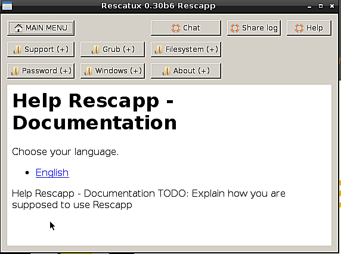
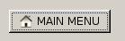
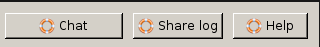
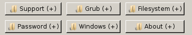
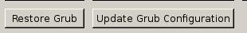
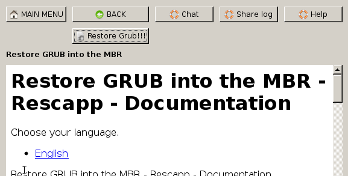
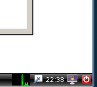
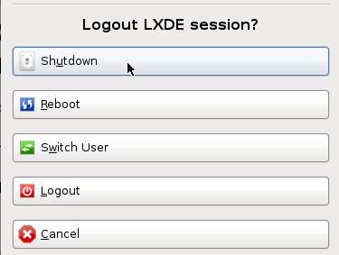
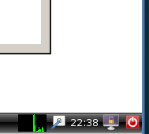
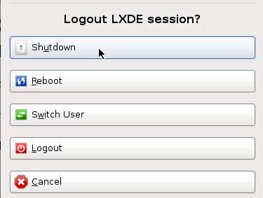

Ayuda de Rescapp - Documentation
Esto es Rescapp. La interfaz de usuario principal de Rescatux.

Vamos a hacer un paseo por sus opciones. La primera cosa que debería saber es que siempre puede volver a la primera pantalla de Rescapp gracias a la opción MAIN MENU.

Si necesitara ayuda es bueno saber que en la parte superior izquierda de la interfaz se encuentran las Opciones de soporte.
- Chat: Abre la ventana de Xchat para que pueda pedir ayudar en el canal IRC de Rescatux.
- Share log: Genera un pastebin de un archivo de log existente para que pueda pedir ayuda en la ventana de chat con sus datos a mano.
- Help: Abre la ayuda que está leyendo ahora por si no está seguro de algo.

Debajo de MAIN MENU y de las opciones de soporte encontrará las opciones de grupo. Esto es opciones que tienen otras opciones dentro de ellas.

Podría elegir la opción Grub(+) que le llevaría a las opciones de Grub.

Una vez aquín puede ver la opción Restore Grub. Haciendo click en ella le enseñará información en la parte inferior de la pantalla con apariencia de navegador web pero no la ejecutará.
Si la quiere ejecutar tendrá que hacer click en el nombre de la opción seguida de !!!. En nuestro ejemplo tendría que hacer click en Restore Grub !!!.

Mientras navegue por las diferentes opciones le aparecerán la opción Back que le conducirá al menú anterior.
Ha de saber que a parte de las opciones encontradas gracias a la interfaz Rescapp hay otras herramientas disponibles en Rescatux. Estas herramientas se encontrarán probablemente en el menú de inicio. Estas herramientas no están soportadas por el equipo de Rescatux, así que se supone que sólo deberían usarlas expertos aún cuando son faciles de usar.
 Finalmente aprenderemos cómo apagar Rescatux. El botón de apagado se encuentra en la esquina inferior derecha. (I dentro de O).

Se le preguntará qué quiere hacer. O bien selecciona Shutdown para apagar su ordenador o reboot para usarlo inmediatamente.

Por último se le requiere quitar su medio (cdrom o usb) de su ordenador y pulsar una tecla para continuar de tal manera que el ordenador sea apagado o reiniciado.
Finalmente aprenderemos cómo apagar Rescatux. El botón de apagado se encuentra en la esquina inferior derecha. (I dentro de O).

Se le preguntará qué quiere hacer. O bien selecciona Shutdown para apagar su ordenador o reboot para usarlo inmediatamente.

Por último se le requiere quitar su medio (cdrom o usb) de su ordenador y pulsar una tecla para continuar de tal manera que el ordenador sea apagado o reiniciado.